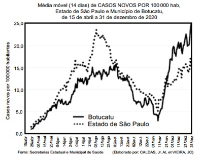
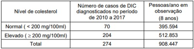
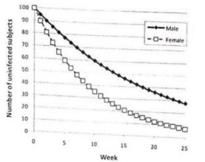
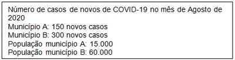
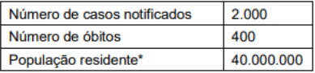
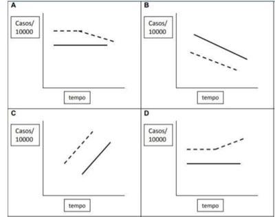
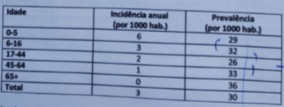

Questão 1 · Medicina Preventiva · 4000194451Alunos do quinto período do curso de Medicina realizaram um inquérito para conhecer o per l de morbidade do corpo docente da universidade, utilizando um questionário auto referido de condições de saúde. Identi caram a existência de 10 casos de hipertensão, e 3 casos de diabetes dentre os 50 professores que lecionavam naquele período. Para descrever os resultados deste estudo, deve ser utilizada a seguinte medida:
A incidência
B letalidade
C prevalência
D mortalidade
Questão 2 · Medicina de Família e Comunidade · 4000194361Com o controle adequado da glicemia dos diabéticos, a prevalência da doença:
A Aumenta
B Diminui
C Não se modifica
D Não pode ser avaliada
Questão 3 · Incidência · 4000190407Num município com população de 100 000 habitantes, sendo 40% do sexo masculino, há o registro de 20 casos de câncer de colo de útero, tendo 5 casos diagnosticados no anos de 2022 e os demais em anos anteriores. O coe ciente de incidência dessa doença, no ano de 2022, é obtido pela divisão de
A 5 por 100 000.
B 20 por 100 000.
C 5 por 60 000.
D 20 por 60 000.
E 15 por 100 000.
Revisar: possível letra faltando em enunciado
Questão 4 · Prevalência · 4000190184Uma determinada Secretaria Estadual de Vigilância em Saúde constatou que no Município X foram registrados 60 novos casos de tuberculose em 2021, além de 140 casos com tratamento em curso. Com base nesses dados, pode-se concluir que nesse município, em 2021:
A A prevalência de tuberculose foi de 60 casos.
B A incidência de tuberculose foi de 200 casos.
C A prevalência de tuberculose foi de 200 casos.
D A incidência de tuberculose foi de 80 casos.
E A prevalência de tuberculose foi de 140 casos.
Questão 5 · Incidência e Prevalência · 4000190117No estudo dos indicadores de saúde, os conceitos de coe ciente e índice são de extrema importância. Em relação a esse tema, analise as proposições abaixo. I. O coe ciente mede o risco ou a probabilidade que qualquer pessoa da população tem de vir a adoecer ou morrer, em determinado local e ano. II. Os índices são proporções ou comparações entre um subconjunto e o conjunto, nas mesmas unidades, sendo expressos em percentual. III. Taxa pode ser utilizada como sinônimo de índice. É correto o que se afirma em
A I e II, apenas.
B I e III, apenas.
C II e III, apenas.
D I, II e III.
Revisar: possível letra faltando em enunciado
Questão 6 · Incidência · 4000189890Descrever as condições de saúde da população, medindo a frequência com que ocorrem os problemas de saúde em população humanas, é um dos objetivos da epidemiologia. Respeito à frequência com que surgem novos casos de uma doença num intervalo de tempo, como se fosse um " lme" sobre a ocorrência da doença, no qual cada quadro pode conter um novo caso ou novos casos. Estamos fazendo referência a:
A Mortalidade.
B Prevalência.
C Morbidade.
D Incidência.
Questão 7 · Prevalência · 4000189887A fórmula: Número de casos existentes em determinado período /Número de pessoas na população no mesmo período x constante; Seria relativa:
A Incidência.
B Mortalidade.
C Prevalência.
D Nascidos Vivos.
Questão 8 · Medicina Preventiva · 4000189519A prevalência é uma medida estática. Alguns fatores podem in uenciar negativa ou positivamente a prevalência. Assinale a alternativa que corresponda a um fator que pode diminuir a prevalência.
A imigração de indivíduos sadios ou a emigração de indivíduos doentes
B imigração de indivíduos doentes ou a emigração de indivíduos sadios
C melhor tratamento, prolongando a sobrevida do paciente, mas não o levando à cura
D maior incidência da doença
Questão 9 · Morbimortalidade por grupo de causas · Indicadores especiais de mortalidade · 4000189106Indicam a probabilidade de ocorrência do evento, relacionando o número de indivíduos com determinada doença e a população sujeita ao risco de adquiri-la:
A Mortalidade proporcional.
B Neonatal precoce.
C Mortalidade absoluta.
D Coeficientes de morbidade.
Questão 10 · Relação entre a Incidência e a Prevalência duração da doença · Prevalência · 4000188593Considerando a a rmação: "A prevalência de HIV entre os mineradores de ouro em uma determinada cidade é de 27% a incidência de HIV entre os mineradores de ouro da mesma cidade é de 2%". Assinale a alternativa que melhor explica:
A Esta sentença está incorreta pois a prevalência nunca poderia ser maior que a incidência.
B Por se tratar de uma doença de longa duração, a prevalência tende a ser maior.
C Significa que 27 a cada 100 mineradores contraem a doença por ano.
D Significa que o risco de contrair a doença entre os saudáveis é de 27%.
E O fato de muitos trabalhadores ao descobrirem a doença, saírem da cidade e buscarem tratamento em suas regiões de origem, é responsável pela redução da taxa de incidência.
Questão 11 · Incidência e Prevalência · 4000188027Epidemiologia é o estudo da distribuição e dos determinantes das doenças ou condições relacionadas à saúde em populações especi cadas, e a aplicação desses estudos para controlar problemas de saúde. Um dos conceitos importantes em epidemiologia é Incidência que significa:
A A presença contínua de uma enfermidade ou de um agente infeccioso dentro de uma determinada área geográfica.
B Medida que reflete ou indica o estado de saúde das pessoas em uma população definida.
C O número de casos novos de uma doença, ocorridos em uma população particular durante um período específico de tempo.
D O número de casos ou de portadores existentes em uma dada população, identificados em um determinado ponto no tempo.
E Qualquer ocorrência de uma doença ou mesmo qualquer mudança dos fatores ligados ao agente, hospedeiro e meio que alteram a estrutura epidemiológica da doença.
Questão 12 · Incidência acumulada x Densidade de Incidência · 4000187569De janeiro de 2019 a janeiro de 2021, 496 idosos foram acompanhados em uma Unidade Básica de Saúde a m de verificar a relação entre a gripe e a vacinação. Nesse período, 36 idosos foram diagnosticados com gripe. Considerando esses dados o seguinte indicador de saúde pode ser calculado:
A Densidade de incidência = 36,3 casos de gripe/1.000 idosos.
B Prevalência pontual = 36,3 casos de gripe/100 idosos.
C Prevalência no período = 72,6 casos de gripe/1.000 idosos.
D Incidência acumulada = 7,26 casos de gripe/100 idosos.
Questão 13 · Incidência · 4000186339O conceito epidemiológico de incidência significa:
A a presença de doença infecciosa numa nação.
B a gravidade de uma patologia sobre a população atingida.
C a magnitude com que subsistem as doenças na população.
D traduz a noção da intensidade com que a morbidade ocorre em uma população.
E o número absoluto de pessoas portadoras de uma patologia em uma população.
Questão 14 · Prevalência · Outros · Medidas de Ocorrência de Doenças Incidência e Prevalência · 4000184759Em relação à medida prevalência de uma doença, analise as afirmativas a seguir: I) elevadas taxas de incidência não implicam em altas proporções de prevalência quando a duração do problema de saúde em questão é curta; II) elevadas proporções de prevalência podem se sobrepor a baixo níveis de incidência quando a duração de uma doença é longa; III)a imigração de casos ou a emigração de não-doentes leva a uma redução na proporção de prevalência. Pode-se afirmar que estão corretas as afirmativas:
A I e III
B I e II
C II e III
D I, II e III
Questão 15 · Medicina Preventiva · 4000184741Em uma reunião com 200 participantes, no Hotel "Come-se Bem e à Vontade", promovida pela Secretaria de Saúde para um curso de atualização em Tuberculose; levou-se inicialmente 50 pro ssionais para uma UNIDADE DE SAÚDE próxima, com quadro de náuseas, vômitos, diarreia e cólicas abdominais. A investigação de surto identi cou um total de 120 casos, envolvendo o consumo de sanduíche de presunto e queijo, oferecido durante o lanche vespertino do segundo dia da reunião e confirmou sua etiologia estafilocócica. Qual a Taxa de Ataque Inicial e final do surto, respectivamente.
A 0,25 e 0,6.
B 0,5 e 1,2
C 5 e 12
D 50 e 120
Questão 16 · Incidência · 4000184560A Secretaria de Saúde está preocupada com o impacto da epidemia de dengue. Para verificar o risco de contrair dengue no ano de 2022, qual indicador deve ser acompanhado?
A Prevalência mensal de dengue em 2022.
B Incidência mensal de dengue em 2022.
C Letalidade da dengue em 2021.
D Mortalidade por dengue acumulada em 2022.
Questão 18 · Incidência e Prevalência · 4000183785Avalie as afirmativas abaixo e assinale a opção que apresenta todas as afirmativas I) Todo indicador de saúde é uma estimativa (mensuração com certo grau de imprecisão) de uma dimensão de saúde em uma população-alvo. II) A taxa de prevalência é definida como o número de casos novos de uma doença ou outra afecção de saúde dividido pela população em risco da doença (população exposta) em um espaço geográfico durante um tempo especificado. III) A taxa de prevalência de uma doença (ou outro agravo) é diretamente proporcional ao produto da taxa de incidência pela duração média da doença. IV) A incidência é fundamental para analisar a ocorrência de novos eventos na população e seus fatores associados. A prevalência é fundamental para planejar e organizar os serviços e recursos existentes e adicionais.
A I – II.
B II – III – IV.
C I – III – IV.
D II– III.
Questão 19 · Incidência · 4000183559Para qual das doenças abaixo listadas o melhor indicador de morbidade é a incidência?
A diabetes;
B hipertensão;
C meningite;
D obesidade.
Questão 20 · Medicina Preventiva · 4000183498Quarenta e oito por cento dos adultos relataram ter tido episódio de cefaleia que durou pelo menos 1 dia nos últimos 3 meses. Qual dos seguintes fatores melhor descreve essa taxa?
A Incidência-densidade
B Incidência cumulativa
C Prevalência-ponto
D Prevalência-período
E Taxa de complicação
Questão 21 · Medicina Preventiva · 4000183484No ano de 2021, 412 mil brasileiros morreram pela Covid-19. Qual dos seguintes fatores melhor descreve essa estatística?
A Prevalência-ponto
B Incidência cumulativa
C Incidência-densidade
D Prevalência-período
E Nenhuma das alternativas
Questão 22 · Medicina Preventiva · 4000182887A figura abaixo representa a ocorrência de casos de uma determinada doença em uma comunidade. Com base nessas informações, os coe cientes de incidência e prevalência dessa doença, durante o mês de maio de 2020, na referida comunidade, foram, respectivamente, de
A 10 e 14.
B 11 e 16.
C 11 e 14.
D 16 e 10.
Revisar: possível letra faltando em enunciado
Questão 23 · Medicina Preventiva · 4000182877Entre 01 de janeiro e 31 de dezembro de 2020 ocorreram 180 acidentes fatais no trânsito em um determinado município. A medida de frequência de acidentes utilizada foi
A letalidade.
B prevalência pontual.
C prevalência no período.
D incidência.
Questão 24 · Medicina Preventiva · 4000182699onsidere a seguinte tabela 2x2 sobre um estudo transversal que investigou a associação entre ter rede de água tratada em casa e crianças com e sem anemia: Considerando-se essa tabela, analisar os itens abaixo: I. A prevalência de anemia entre as crianças com rede tratada foi de 70/326 = 21,4%. II. A prevalência de anemia entre as crianças com rede sem tratamento foi de 193/422= 45,7%. III. A razão de prevalência foi de 0,21/0,45=0,47, indicando que as crianças nos domicílios sem rede tratada tinham 53% menos prevalência de anemia do que naqueles domicílios com rede tratada. Está(ão) CORRETO(S):
A Somente o item I.
B Somente o item II.
C Somente o item III.
D Somente os itens I e II.
Questão 25 · Medicina Preventiva · 4000182694Em relação ao indicador incidência-densidade, analisar os itens abaixo: I. O denominador da medida é pessoas-tempo em risco para o desfecho. II. É uma medida utilizada frequentemente para analisar resultados de ensaios clínicos. III. Todos os casos em um ponto ou período de tempo são incluídos no numerador. Está(ão) CORRETO(S):
A Somente o item I.
B Somente o item III.
C Somente os itens I e II.
D Todos os itens.
Questão 26 · Incidência acumulada x Densidade de Incidência · 4000181783Os indicadores de acidentes de trabalho geram indícios para a determinação de níveis de periculosidade por área pro ssional e são relevantes para a avaliação das doenças pro ssionais. Qual, dentre eles, é o mais acurado para medir a ocorrência de acidentes de trabalho, pois leva em conta o número de horas/homem trabalhadas?
A Densidade de incidência.
B Incidência acumulada.
C Prevalência pontual.
D Prevalência no período.
Questão 27 · Incidência e Prevalência · 4000181202Os conceitos de prevalência e incidência são fundamentais para compreender como certos agravos afetam uma determinada população. Considere que, em determinado município, no ano de 2020, foram diagnosticados 15 casos de tuberculose. Desses, cinco obtiveram cura no mesmo ano. Em 2021, mais três casos foram diagnosticados. Diante dessas informações, assinale a alternativa correta.
A No ano de 2020, a incidência de casos de tuberculose foi de 10.
B No ano de 2020, a prevalência de casos de tuberculose foi de 10.
C No ano de 2021, a prevalência de casos de tuberculose foi de 3.
D No ano de 2021, a prevalência de casos de tuberculose foi de 13.
E No ano de 2021, a incidência de casos de tuberculose foi de 13.
Questão 28 · Incidência e Prevalência · 4000189694A medida de ocorrência definida como o número de pessoas afetadas na população em um determinado momento, dividido pelo número de pessoas na população naquele momento é CHAMADA de:
A Incidência.
B Morbidade.
C Taxa de ataque.
D Prevalência.
Questão 29 · Incidência e Prevalência · 4000189692Em uma equipe que sua área de abrangência tem 2.000 pessoas cadastradas, com 240 diabéticos, sendo que desses 60 tiveram diagnóstico no último ano durante uma campanha de busca ativa, é CORRETO a rmar que a incidência de diabéticos é de:
A 12%
B 3%
C 6%
D 9%
Questão 30 · Incidência e Prevalência · Incidência · 4000176023A frequência de casos novos de uma determinada doença em certo período de tempo, oriundo de uma população sob risco de adoecer no início da observação” é a definição de qual dos termos abaixo?
A Taxa de morbidade
B Risco relativo
C Odds Ratio
D Incidência
Questão 31 · Prevalência · 4000175810O que é prevalência de uma doença
A Número novos de uma doença, em um dado momento;
B Número de casos existentes de uma doença em um dado momento
C Número percentual da possibilidade de ser contaminado por uma doença
D Número absoluto de doenças contagiosas em uma determinada região
E Nenhuma das respostas acima
Questão 32 · Usos da Incidência e da Prevalência em Saúde Pública · 4000175537Determinado município apresenta um aumento significativo de incidência de hepatite B na população num determinado ano. Sobre isso, é correto afirmar que:
A esse indicador não deve ser usado para qualquer mudança no planejamento, pois é preciso verificar se essa tendência se consolidará
B os casos subclínicos também devem ter sofrido um aumento, e isso é de fácil investigação clínica
C se trata de indicador de fácil obtenção, pois o diagnóstico clínico é relativamente simples pelos sinais exuberantes
D indica insuficiente cobertura de vacinação em segmentos populacionais mais expostos ao risco de contaminação
Questão 33 · Incidência e Prevalência · Medicina Preventiva · Usos da Incidência e da Prevalência em Saúde Pública · 4000170085O gráfico representado na imagem expressa a evolução de casos novos de covid-19 no município de Botucatu e no estado de São Paulo, de abril a dezembro de 2020. A medida de saúde que está expressa no gráfico é

A razão de morbidade média.
B risco relativo médio.
C coeficiente médio de prevalência.
D coeficiente médio de incidência.
Questão 34 · Prevalência · Incidência · 4000169262O gráfico abaixo mostra a tendência de casos noti cados de AIDS, óbitos e número de pessoas vivendo com AIDS no estado de São Paulo no período de 1992 a 2019. A mortalidade pela infecção do HIV aumentou rapidamente de 1992 a 1995, diminuindo a partir de 1995 até 2003, com tendência a estabilização até 2015 e posteriormente volta apresentar queda. Esta queda nos óbitos em grande parte pela introdução das novas e altamente ativas terapias antirretrovirais, bem como mudanças no estilo de vida resultantes de educação em saúde pública. Com a queda da mortalidade e o aumento na expectativa de vida de muitas pessoas com vivendo com aids observa-se: Imagens anexas:

A O aumento significativo da incidência de AIDS.
B O aumento significativo da prevalência de AIDS.
C A redução significativa da virulência da Infecção pelo HIV.
D A redução significativa do ataque secundário da infecção pelo HIV.
Questão 35 · Prevalência · 4000168449Qual o termo utilizado para expressar o número de casos de uma doença em um determinado momento?
A Prevalência.
B Mortalidade.
C Morbidade.
D Incidência.
E Letalidade.
Questão 36 · Morbidade · 4000168398O termo compressão de morbidade versa sobre: I- postergar o início das doenças, pois estas, em sua maioria, são crônicas e uma vez instaladas, não regridem e acabam por restringir a atuação médica ao controle de sua progressão. II- controle de doenças crônicas já instaladas, aumentando assim os anos vividos com dependência. III- o envelhecimento populacional não está relacionado com o aumento das doenças crônicas.
A Apenas a opção I é correta.
B Apenas a opção II é correta.
C Apenas a opção III é correta.
D Apenas a opção III é errada.
E Apenas a opção II é errada.
Questão 37 · Incidência e Prevalência · Medicina Preventiva · Incidência · 4000168369Qual o numerador usado para o cálculo da taxa de incidência de uma doença referente a uma determinada população estudada?
A Todos os casos diagnosticados durante um estudo transversal.
B Todos os casos novos diagnosticados durante o período de seguimento.
C Todos os indivíduos doentes presentes no início do período de seguimento.
D Todos os indivíduos doentes presentes no final do período de seguimento.
Questão 38 · Incidência e Prevalência · 4000166847Em 2018, a Coordenação Estadual de Segurança do Paciente e Controle de Infecção em Serviços de Saúde de Goiás publicou um documento sobre os indicadores das infecções relacionadas à assistência à saúde. Nele, conforme o gráfico a seguir, foi apresentado um indicador de pneumonia associada à ventilação mecânica em UTI adulto, por mês, naquele ano. Para a construção do gráfico, o indicador utilizado foi a
A incidência acumulada.
B prevalência no período.
C prevalência absoluta.
D densidade de incidência.
Questão 39 · Incidência e Prevalência · Medicina Preventiva · 4000165577O médico responsável pela Vigilância Epidemiológica de um município foi chamado para estabelecer se está ocorrendo uma epidemia, uma vez que vem ocorrendo um grande aumento na procura aos serviços de saúde devido à ocorrência de casos de uma doença respiratória não bem definida. Após investigações iniciais, foi estabelecida a definição de caso e critérios para o diagnóstico de forma a orientar a investigação. Uma vez que esses requisitos foram atendidos, qual instrumento metodológico é utilizado em vigilância epidemiológica para estabelecer a existência ou não da epidemia?
A Comparação da prevalência nesse município com a de anos anteriores.
B Comparação da incidência observada nesse município com municípios vizinhos.
C Comparação da incidência atual nesse município com a de anos anteriores.
D Comparação da prevalência observada nesse município com municípios vizinhos. ida oib pr ed
Questão 40 · Incidência e Prevalência · 4000165407Com relação as medidas de ocorrência de doenças, prevalência e incidência, é correto afirmar que:
A prevalência representa o risco de ocorrência (casos novos) de doença na população sendo assim uma medida estática
B prevalência e incidência são o número de dados presentes em uma determinada comunidade num período de tempo especificado
C a prevalência representa número de casos presentes (novos e antigos) em uma determinada comunidade num período de tempo especificado; a incidência, número de casos novos
D incidência representa o número de casos presentes (antigos) em uma determinada região, num período de tempo predeterminado
Questão 42 · Ensaios clínicos · Incidência · 4000164862Uma equipe de saúde tem como proposta realizar uma comparação do efeito de duas vacinas diferentes (vacina A e vacina B) com intuito de verificar o efeito protetor de cada uma delas contra o COVID-19. Dois mil voluntários, que estavam em igual risco de sofrer a doença concordaram em participar da investigação, eles foram separados aleatoriamente em metades, de modo a construir dois grupos (grupo 1 e grupo 2) com características semelhantes. Os indivíduos pertencentes ao grupo 1 recebem a vacina A e os pertencentes ao grupo 2 recebem a vacina B. Nenhum dos participantes do estudo sabem qual vacina receberam. Suponhamos que, passados doze meses de observação, constata-se que a incidência da doença é menor nos vacinados pela vacina A. Os resultados alcançados pelo estudo descrito foram os seguintes: A taxa de incidência da doença no grupo que recebeu a vacina A foi:
A 2%
B 6%
C 10%
D 98%
Questão 43 · Conceitos básicos · 4000164570Analise as seguintes assertivas em relação aos critérios a serem utilizados na definição de indicadores de saúde: I. Mensurabilidade é a capacidade de basear-se em dados disponíveis ou fáceis de serem obtidos. II. Confiabilidade é a capacidade de reproduzir os mesmos resultados quando aplicado em condições similares. III. Relevância é a capacidade de medir o que se pretende, incluindo a sensibilidade e a especificidade. Quais estão corretas?
A Apenas I e II.
B Apenas I e III.
C Apenas II e III.
D I, II e III.
Questão 44 · Prevalência · 4000163584Em um município, no último dia do ano de 2019 existiam 235 casos de diabetes, no ano seguinte, 30 novos casos foram diagnosticados. Neste mesmo ano, 4 pessoas que já possuíam diabetes mudaram-se para esse município, sendo que do total de casos desse município, 3 foram a óbito. População do município 31/12/2019 – 150.000 habitantes 01/07/2020 – 153.000 habitantes 31/12/2020 – 156.000 habitantes Qual a prevalência dessa doença por mil habitantes em 31/12/2020?
A 1,50
B 1,53
C 1,67
D 1,70
E 1,73
Questão 45 · Fatores que interf erem na prevalência · 4000174371O tratamento para esta doença foi capaz de evitar a morte, mas não de levar a cura, como se comportará esta doença?
A Aumento incidência.
B Não haverá alteração.
C Diminuição da escala.
D Aumento prevalência.
Questão 46 · Incidência · 4000173936Em 2019 o município X registrou 60 casos novos de tuberculose. Além disso, 10 casos registrados em 2018 continuavam em tratamento nesse mesmo município. Durante 2019 ocorreram 2 óbitos por tuberculose. Considerando-se que a população do município X em 2019 era de 100.000 habitantes, sendo 50.000 maiores de 15 anos de idade, pode-se a rmar que a incidência de tuberculose foi de:
A 12 casos por dez mil habitantes.
B 11,6 casos por dez mil habitantes.
C 6 casos por dez mil habitantes.
D 6,8 casos por dez mil habitantes.
Questão 47 · Incidência acumulada x Densidade de Incidência · 4000173745Uma determinada cidade com 10.000 habitantes, que possua 500 pessoas portadoras de uma determinada doença, das quais 50 tenham adoecido durante o último ano. Pode se afirmar sobre as taxas da doença no último ano que:
A A prevalência foi de 5,5%
B A incidência foi de 5,2/1.000
C A incidência foi de 5,0/1.000
D A prevalência foi de 5,8%
Questão 48 · Prevalência · 4000173744A prevalência de uma doença pode ser afetada por todos os critérios a seguir, EXCETO:
A Melhora do tratamento de doença, sem cura.
B Aumento da sobrevida dos doentes.
C Descoberta de uma vacina que previna a doença.
D Emigração de pessoas sem a doença.
Questão 49 · Incidência e Prevalência · Incidência acumulada x Densidade de Incidência · Incidência · 4000173235Com o objetivo de investigar a associação entre nível de colesterol sérico e doença isquêmica do coração (DIC), em 2010, foram recrutados 118.539 homens com idade entre 30 e 59 anos. Os participantes do estudo não tinham história de doença coronariana. Um total de 274 casos de DIC foi observado ao longo de oito anos de acompanhamento. Os resultados estão resumidos a seguir: Considerando que não houve perda de participantes do estudo, qual é a taxa de incidência cumulativa para DIC no período do estudo?

A 1,6 por 1.000 pessoas.
B 2,3 por 1.000 pessoas.
C 30,2 por 100 mil pessoas/ano de observação.
D 39,8 por 100 mil pessoas/ano de observação.
E 17,7 por 100 mil pessoas/ano de observação.
Questão 50 · Incidência acumulada x Densidade de Incidência · 4000172201Em uma equipe cuja área de abrangência tem 5.000 pessoas cadastradas, com 1.050 hipertensos, sendo que desses 150 tiveram diagnóstico no último ano, a incidência de hipertensos é de:
A 21%.
B 3%.
C 17%.
D 15%.
E 7%.
Questão 51 · Fatores que interf erem na prevalência · 4000171771Um novo tratamento para uma doença não infecciosa, capaz de evitar a morte, porém sem levar a cura, ira causar no comportamento de tal doença:
A Redução da prevalência.
B Redução da incidência.
C Aumento na prevalência.
D Aumento na incidência.
Questão 52 · Incidência e Prevalência · 4000171664100 Homens e 100 mulheres não infectados pela malária, na semana zero, foram acompanhados por 25 semanas. Cada um dos indivíduos foi avaliado, semanalmente, em relação ao desenvolvimento de infecção pela doença. O resultado é mostrado no gráfico abaixo. Assinale a correta:

A A prevalência da malária foi mais alta em homens do que mulheres.
B A prevalência variou em escala senoidal.
C A incidência foi mais alta em mulheres do que homens.
D A prevalência segue uma curva normal.
E Escalas logarítmicas foram utilizadas na confecção dos dados.
Questão 53 · Incidência e Prevalência · 4000170801A prevalência é um indicador da magnitude da carga atual que a doença representa para os serviços de saúde e para a sociedade, sendo adequado que:
A Não como um preditor da futura carga que as complicações crônicas do diabetes representarão.
B Como um preditor da atual carga que as complicações crônicas do diabetes representarão.
C Como um preditor da futura carga que as complicações crônicas do diabetes representarão.
D Como um desvinculador da futura carga que as complicações crônicas do diabetes representarão.
Questão 54 · Incidência e Prevalência · 4000170797A incidência traduz o risco médio da população em adquirir a doença, além de servir de parâmetro para a avaliação do impacto produzido por medidas de prevenção que o diabetes representa para os sistemas de saúde. Assim podemos concordar com o item:
A Tanto a frequência de existentes casos (incidência) como a de casos existentes (prevalência) são informações importantes para o conhecimento da carga que o diabetes representa para os sistemas de saúde.
B Tanto a frequência de novos casos (incidência) como a de casos existentes (prevalência) não são informações importantes para o conhecimento da carga que o diabetes representa para os sistemas de saúde.
C Tanto a frequência de novos casos (incidência) como a de casos novos (prevalência) são informações importantes para o conhecimento da carga que o diabetes representa para os sistemas de saúde.
D Tanto a frequência de novos casos (incidência) como a de casos existentes (prevalência) são informações importantes para o conhecimento da carga que o diabetes representa para os sistemas de saúde.
Questão 55 · Incidência · 4000151709Analise o quadro abaixo: Analise as afirmativas a seguir: I. O município B encontra-se em pior situação quando comparamos com o município A. PORQUE II. O número total de casos no segundo município evidencia um problema de maior magnitude.

A As duas afirmativas estão corretas e a afirmativa II é uma justificativa da afirmativa I.
B As duas afirmativas estão corretas e a afirmativa II não é uma justificativa da afirmativa I.
C A afirmativa I está correta e a afirmativa II está incorreta.
D As duas afirmativas estão incorretas.
Questão 56 · Dif erenças entre Incidência e Prevalência · 4000147582Andrea é uma secretária de saúde muito comprometida com seu município e está preocupada com a grande carga de morbidade gerada pelo diabetes mellitus tipo 2. Sabendo que a incidência da doença é igual a 1.000 casos novos por 100.000 habitantes, e que a prevalência é igual a 40 por 100, quanto tempo, em média, vive um paciente diabético naquela localidade?
A 5 anos.
B 10 anos.
C 30 anos.
D 40 anos.
E 50 anos.
Questão 57 · Incidência e Prevalência · Dif erenças entre Incidência e Prevalência · Prevalência · 4000146918Entre os recrutas que se apresentaram para prestar serviço militar, na capital de um estado da região Nordeste, a cada ano, foram encontrados os seguintes resultados da sorologia positiva para doença de Chagas (dados ctícios): 2000 (15%); 2001 (13%); 2002 (11%); 2003 (10%); 2004 (8%); 2005 (5%). Verificou- se redução, ao longo do tempo, no indicador chamado:
A incidência;
B prevalência;
C risco atribuível;
D excesso de risco;
E risco relativo.
Questão 58 · Incidência e Prevalência · 4000146917Os pacientes com en sema pulmonar grave, tratados em um hospital de referência para doenças respiratórias, foram entrevistados e 98% afirmaram que eram ou tinham sido fumantes inveterados. Esta porcentagem indica:
A Incidência.
B Prevalência.
C Risco atribuível.
D Excesso de risco.
E Risco relativo.
Questão 59 · Incidência e Prevalência · Medicina Preventiva · Mortalidade · 4000146913O Ministério da Saúde recebeu a primeira noti cação de um caso confirmado de COVID-19 no Brasil em 26 de fevereiro de 2020. De 26 de fevereiro a 26 de dezembro de 2020 foram confirmados 7.465.806 casos e 190.795 óbitos por COVID-19 no Brasil. O maior registro no número de novos casos (70.570 casos) ocorreu no dia 16 de dezembro e de novos óbitos (1.595 óbitos) ocorreu no dia 29 de julho. Em relação aos casos, a média móvel de casos registrados na semana epidemiológica (SE) 52 (20 a 26/12) foi de 36.093, enquanto na SE 51 (13 a 19/12) foi de 47.575, representando uma redução de 24% no número de casos. Quanto aos óbitos, a média móvel de óbitos registrados na SE 52 foi de 634, representando um aumento de 15% em relação à média de registros da SE 51 (748). Durante a SE 52 foram registrados um total de 252.651 casos e 4.439 óbitos novos por COVID-19 no Brasil. Para o país, a taxa de incidência até o dia 26 de dezembro de 2020 foi de 3.552,7 casos por 100 mil habitantes, enquanto a taxa de mortalidade foi de 90,8 óbitos por 100 mil habitantes. Sobre os indicadores “I-taxa de incidência” e “II-taxa de mortalidade”, assinale a alternativa CORRETA.
A I e II são indicadores utilizados para “medir” a probabilidade de ocorrência de um evento mórbido;
B I é um indicador de número absoluto, enquanto II é um indicador de número relativizado;
C I e II são indicadores de número relativizado utilizados para estimar risco de ocorrência de eventos de interesse na área da saúde;
D I não fornece a noção de risco, enquanto II apresenta a noção de gravidade da doença;
E I e II são considerados indicadores em saúde do tipo índice, pois são obtidos como o resultado de escores multidimensionais.
Questão 60 · Incidência e Prevalência · Dif erenças entre Incidência e Prevalência · Incidência · 4000146027Em 1976, em um estudo realizado nos Estados Unidos, foram acompanhadas 118.539 mulheres com idade entre 30-55 anos sem história de doença coronariana, acidente vascular cerebral (AVC) ou câncer. Um total de 274 casos de AVC foi observado ao longo de oito anos. O cálculo epidemiológico que melhor se aplica à velocidade de ocorrência de AVCs na população estudada é:
A Incidência
B Prevalência
C Razão de chances
D Probabilidade
Questão 61 · Morbidade · 4000145849Morbidade pode ser definida como:
A medida que nos permite identificar a gravidade dos agravos à saúde
B diferença de agravos à saúde que atingem uma determinada população
C conjunto de casos ou de agravos à saúde que acometem um grupo populacional
D número ou quantidade de seres que morrem em certa época, idade ou de determinada doença
Questão 62 · Prevalência pontual · 4000145580Um teste diagnóstico com 90% de especi cidade e 80% de sensibilidade aplicado a um grupo de mil pessoas resultou em 170 resultados positivos. Isto posto, a prevalência da doença no grupo estudado é:
A 1,80%
B 10%
C 21,50%
D 42%
Questão 63 · Incidência e Prevalência · Prevalência · 4000145444A maioria das pessoas que desenvolve COVID-19 se recupera em poucas semanas. No entanto, algumas - mesmo aquelas que tiveram sintomas leves durante a infecção - continuam apresentando sintomas após a sua recuperação inicial. Sintomas como tosse, fadiga, dispneia, dores articulares e dor torácica podem estar presentes pelos meses seguintes a infecção. Além disso, está sendo observado acometimento a longo prazo de determinados órgãos, como coração, pulmões e cérebro, além da ocorrência maior de eventos trombóticos. O cálculo epidemiológico adequado para estimar a presença de sintomas crônicos posteriores à infecção pelo SARSCoV-2 é designado:
A Razão de chances.
B Incidência.
C Prevalência.
D Probabilidade.
Questão 64 · Fatores que interf erem na prevalência · 4000145046Que fator, dentre os propostos abaixo, reduz a prevalência de qualquer doença?
A Aumento da incidência
B Aumento dos insucessos dos tratamentos
C Aumento da letalidade
D Incremento da expectativa de vida dos pacientes
E Incremento da migração de áreas com níveis endêmicos mais elevados.
Questão 65 · Prevalência · 4000145042Considerando as medidas de prevalência, é INCORRETO afirmar que:
A em saúde pública, prevalência é termo descritivo da força em que subsistem às doenças nas comunidades
B a dos tipos instantânea, pontual ou momentânea é medida pela frequência da doença ou pelo seu coeficiente em um ponto definido no tempo
C é medida pela contagem de casos emergentes e pela frequência absoluta de casos novos relacionados à unidade de intervalo de tempo
D os índices de prevalência são valiosos para a ação de planejar, em função do número de doentes existentes na comunidade
E a cura, o óbito e os doentes emigrados são eventos que influenciam a prevalência.
Questão 66 · Prevalência · 4000145041Numa pequena cidade do interior do país foi implantada uma Unidade de Saúde da Família e após avaliação anual, observou- se aumento da prevalência de diabetes mellitus e hipertensão arterial, apesar do aparente bom funcionamento da unidade. Inconformado, o gestor da saúde do município convocou os pro ssionais de saúde para explicações. Assinale a alternativa correta:
A o aumento da prevalência é esperado, pois em um ano, as ações de controle das doenças não mostrariam ainda seus efeitos positivos
B o aumento da prevalência é esperado e se deve ao aumento de diagnósticos das doenças
C o aumento da prevalência é inesperado e deverão ser adotadas medidas para melhorar o controle de doenças
D o aumento da prevalência é inesperado e provavelmente há erros na notificação das doenças, superestimando as prevalências
E Nenhuma das respostas anteriores pode explicar esta situação.
Questão 67 · Medicina Preventiva · Medidas de saúde coletiva · Epidemiologia · 4000144970A busca de medidas do estado de saúde da população é uma atividade central em saúde pública, iniciada com o registro sistemático de dados de mortalidade e de sobrevivência. Os indicadores de saúde foram desenvolvidos para facilitar a quanti cação e a avaliação das informações produzidas com tal nalidade. A validade de um indicador de saúde pode ser determinada por sua sensibilidade, sendo definida pela sua capacidade de:
A Basear-se em dados disponíveis ou fáceis de conseguir
B Reproduzir os mesmos resultados quando aplicado em condições similares
C Detectar o fenômeno analisado
D Justificar através dos resultados o investimento de tempo e recursos
E Detectar somente o fenômeno analisado
Questão 68 · Fatores que interf erem na prevalência · 4000144809A introdução de uma nova medicação para a leucemia crônica, que não cura da doença, porém evita a morte, produzirá em termos epidemiológicos um:
A Aumento da incidência
B Aumento da prevalência
C Redução da incidência
D Redução da prevalência
E Aumento da mortalidade geral
Questão 69 · Relação entre a Incidência e a Prevalência duração da doença · 4000144006Considerando-se que a incidência só considera os casos novos identi cados em uma população em um dado período, analise a afirmação abaixo e responda à questão: Em uma cidade, observa-se que uma doença possui uma incidência de 10 casos novos por 10 mil habitantes e prevalência de 6 casos por mil habitantes. Assim, qual a duração dessa doença em anos?
A 34 anos.
B 22 anos.
C 12 anos.
D 6 anos.
Questão 70 · Prevalência · Testes Diagnósticos · 4000143030Um pesquisador observou que de 255 pessoas submetidas a um determinado teste, 165 pessoas têm uma doença e 90 são saudáveis. Das 165 pessoas que têm a doença, 135 têm um leste positivo e 30 têm um teste negativo. Das 90 pessoas saudáveis, 60 têm um leste negativo e 30 têm um teste positivo. Qual é a prevalência da doença?
A 53%
B 65%
C 82%
D 76%
Questão 71 · Morbidade · 4000138119Assinale a alternativa que melhor define o conceito de morbidade.
A A capacidade de determinada doença em produzir danos à saúde.
B Ocorrência de doenças e agravos à saúde em uma dada população.
C Taxa de manifestação de uma determinada doença.
D Proporção de óbitos em relação ao número de casos.
E Índice demográfico que reflete o número de mortes registradas.
Questão 72 · Incidência · 4000133872Em uma equipe cuja área de abrangência tem 5.000 pessoas cadastradas, com 1.050 hipertensos, sendo que desses 150 tiveram diagnóstico no último ano, a incidência de hipertensos é de:
A 21%.
B 3%.
C 17%.
D 7%.
Questão 73 · Incidência e Prevalência · Dif erenças entre Incidência e Prevalência · Medicina Preventiva · 4000129875Com a descoberta e instituição de tratamentos do Diabetes que melhoram o prognóstico, mas não levam a cura, a incidência e a prevalência desse agravo, respectivamente,
A permanecem as mesmas.
B aumenta e diminui.
C diminui e permanece a mesma.
D permanece a mesma e aumenta.
E aumentam.
Questão 74 · Incidência e Prevalência · 4000130419O relatório de exames periódicos de uma indústria têxtil com 1000 funcionários registrou 150 indivíduos com hipertensão arterial, em 2016. Após 12 meses o relatório foi atualizado com 170 casos. Não houve demissões, aposentadorias, falecimentos e admissões no período. A PROPORÇÃO DE INCIDÊNCIA DA DOENÇA EM 2017 É:
A 5,1%.
B 2%.
C 17%.
D 13%.
Questão 75 · Incidência · 4000129235“Doutor João está em dúvidas em relação à prevalência de hipertensão arterial sistêmica no seu município. De um total de 10 mil pessoas cadastradas no seu município para o ano de 2018, foram identi cados e cadastrados 2 mil casos no total. Ao longo do ano de 2018, foram identi cados, em média, 50 casos novos por mês”. Em relação a essa informação descrita na situação-problema, a incidência de hipertensão arterial sistêmica naquele município para o ano de 2018 foi:
A 6%
B 14%
C 20%
D 24%
E 26%
Questão 76 · Fatores que interf erem na prevalência · 4000119483A doença X tem uma incidência de 7 por 100.000 habitantes por ano e prevalência de 70 por 100.000 habitantes por ano. A incidência de X é constante ao longo dos anos. Foi lançado no mercado uma nova droga que controla a doença e aumenta a sobrevida das pacientes, mas não cura a doença X. Qual será o provável efeito da introdução desta nova droga?
A Aumento da incidência.
B Diminuição da incidência.
C Aumento da prevalência.
D Diminuição da prevalência.
Questão 77 · Incidência · 4000117426A respeito da interpretação apropriada das taxas de incidência, analise as afirmativas a seguir: I. Além da falta de sensibilidade quanto a distinções importantes, as taxas de incidência têm di culdades de interpretação, por serem confundidas, frequentemente, com riscos (probabilidades). II. A porção numérica de uma taxa de incidência tem um limite inferior igual a zero e nenhum limite superior, que é o intervalo da razão de uma quantidade não negativa para uma positiva. III. A taxa de incidência é mensurada em unidades do inverso do tempo. IV. O valor numérico de uma taxa de incidência é interpretável porque não depende da seleção da unidade de tempo. Assinale.
A se somente as afirmativas I e III estiverem corretas.
B se somente as afirmativas II e IV estiverem corretas.
C se somente as afirmativas I, III e IV estiverem corretas.
D se somente as afirmativas I, II e III estiverem corretas.
E se todas as afirmativas estiverem corretas.
Questão 78 · Incidência · 4000114797Em 2018, uma população de 100.000 habitantes apresentou 50 casos novos de tuberculose, 5 óbitos, e 40 casos tiveram alta por cura. Em 2017, na mesma população, foram registrados 40 casos de tuberculose, 10 óbitos e 20 casos curados. Pode-se dizer que
A a taxa de incidência de tuberculose em 2018 foi igual a 5 por dez mil.
B a taxa de prevalência de tuberculose em 2018 foi igual a 5 por dez mil.
C a taxa de incidência de tuberculose em 2018 foi igual a 6 por dez mil.
D a taxa de prevalência de tuberculose em 2018 foi igual a 5,5 por dez mil.
Questão 79 · Letalidade · Incidência · Mortalidade · 4000110701Qual a alternativa que corresponde, respectivamente, aos indicadores de saúde estimados a partir das informações a seguir, visto que foram obtidos os seguintes valores: 5/100.00; 1/100.000 e 20%? Quadro. Casos notificados e óbitos por meningite bacteriana no Estado de São Paulo, no ano de 2013. Dados modificados para facilitar cálculos: *População residente em 2012, estimativa pelo IBGE. Fonte: SINAN/DDTR/CVE/CCD/SES-S

A Taxa de Letalidade, Coeficientes de Mortalidade e de Incidência.
B Coeficientes de Prevalência, de Mortalidade e Taxa de Letalidade.
C Coeficientes de Incidência, de Mortalidade e Taxa de Letalidade.
D Coeficientes de Incidência, de Mortalidade e de Prevalência.
Questão 80 · Prevalência · 4000096327Um pesquisador observou que de 255 pessoas submetidas a um determinado teste, 165 pessoas têm uma doença e 90 são saudáveis. Das 165 pessoas que têm a doença, 135 têm um teste positivo e 30 têm um teste negativo. Das 90 pessoas saudáveis, 60 têm um teste negativo e 30 têm um teste positivo. Qual é a prevalência da doença?
A 53%
B 65%
C 82%
D 76%
Questão 81 · Incidência · 4000094179A figura abaixo se refere ao início e término de 12 episódios de uma doença infecciosa aguda, ocorridos ao longo de 5 semanas, em um asilo que abriga 160 idosos. Cada linha demarca um paciente. A alternativa que descreve corretamente o comportamento da incidência da doença é:

A 3, 2 e 6 casos na 1ª, 2ª e 3ª semanas.
B 3, 4 e 9 casos na 1ª, 2ª e 3ª semanas.
C Incidência menor na primeira semana.
D Incidência menor na segunda semana.
E Incidências menores na primeira e na última semana.
Questão 82 · Incidência e Prevalência · 4000073788Em relação às medidas de frequência de doença, assinale a alternativa CORRETA, sobre o conceito de prevalência (Medronho, 2009):
A É a frequência de casos novos de uma doença, decorrente de uma população sob risco de adoecimento, ao longo de um período de tempo.
B É a frequência de casos existentes de uma determinada doença, em uma determinada população e em um dado momento.
C É a medida do número esperado de anos a serem vividos, em média, pelos indivíduos.
D É o risco atribuível ao efeito de exposição dependente da relação entre causa e prevenção.
Questão 83 · Prevalência pontual · Incidência · 4000072911Um grupo de 400 crianças foi rastreado com exame parasitológico de fezes no início do ano. Foi identi cado que 40 dessas crianças tinham exame positivo para Ascaris. Neste mesmo grupo de 400 crianças foram diagnosticados 2 casos de sarampo durante um ano de acompanhamento. Assinale a alternativa que apresenta corretamente as respectivas taxas de prevalência de infestação por Ascaris e incidência de sarampo nesta população.
A 0,5% e 5%
B 1% e 2%
C 4% e 1%
D 10% e 0,5%
E 40% e 0,05%
Revisar: possível letra faltando em enunciado
Questão 84 · Prevalência · 4000062070O médico do centro de saúde é responsável pelo acompanhamento de 120 crianças em uma comunidade. Dessas, 100 crianças estão matriculadas em uma creche e 20 cam em casa com suas mães. Das crianças que frequentam a creche, 50 tiveram resfriado comum, enquanto 8 crianças que cavam em suas casas tinham a doença, em um nal de semana de julho. Assinale a alternativa que apresenta, correta e respectivamente, a prevalência de resfriado entre as crianças que frequentam a creche e as que ficam em casa.
A 20% e 25%
B 40% e 5%
C 50% e 40%
D 50% e 80%
E 80% e 20%
Questão 85 · Incidência acumulada x Densidade de Incidência · 4000059083Um epidemiologista necessita medir o número de casos novos de uma doença em uma população que varia no tempo. Para tanto, ele deve calcular a:
A Incidência refratária
B Densidade de incidência
C Prevalência pontual
D Prevalência no período
E Nenhuma das anteriores
Questão 86 · Prevalência · Incidência · 4000054069De 200 pacientes internados em um determinado hospital, 50 foram submetidos a procedimento cirúrgico em um período de 1 semana. Dentre estes 50, foram detectados 5 casos de infecção hospitalar (IH), e nenhum caso de IH ocorreu nos outros 150 neste período. Podemos afirmar que:
A A taxa de incidência de IH dentre os pacientes operados nesta semana foi de 5/50.
B A taxa de incidência de IH no hospital nesta semana foi de 5/50.
C A taxa de prevalência de IH no hospital nesta semana foi de 5/200.
D A taxa de prevalência de IH dentre os pacientes operados nesta semana foi de 5/100.
Questão 87 · Incidência e Prevalência · 4000052926“Doutor João está em dúvidas em relação à prevalência de hipertensão arterial sistêmica no seu município. De um total de 10 mil pessoas cadastradas no seu município para o ano de 2018, foram identi cados e cadastrados 2 mil casos no total. Ao longo do ano de 2018, foram identi cados, em média, 50 casos novos por mês”. A partir dessas informações, a prevalência de hipertensão arterial sistêmica naquele município para o ano de 2018 foi de:
A 6%
B 14%
C 20%
D 24%
E 26%
Questão 88 · Prevalência · 4000039068O secretário de saúde de um município com 12.000 habitantes que, em 31/12/2017, contava com 208 casos de pacientes com câncer, verifica que em 2018, na mesma população, foram diagnosticados 80 novos casos de câncer. Nesse período, 4 pessoas, já com diagnóstico da doença, passaram a residir no município e 12 habitantes vieram a óbito por conta dela. Considerando as taxas de incidência e prevalência para a situação descrita, assinale a alternativa correta.
A A taxa de incidência de câncer no município, em 2018, foi de 2,33%.
B A taxa de prevalência de câncer no município, em 2018, foi de 0,66%.
C A taxa de incidência de câncer no município, em 2018, foi de 0,0006%.
D A taxa de prevalência de câncer no município, em 2017, foi de 1,73%.
E A taxa de incidência de câncer no município, em 2017, foi de 0,66%.
Questão 89 · Incidência e Prevalência · 4000036666Em uma determinada região com uma população de 105.000 pessoas, ocorria uma doença incurável e não fatal. Em uma amostra constituída por 1% da população, foram detectadas 50 pessoas com a doença. Esta amostra foi acompanhada durante cinco anos, tendo a doença sido desenvolvida por mais 50 pessoas neste período. Assinale a alternativa que indica corretamente a prevalência e a incidência da doença nesta amostra populacional:
A 4,7% e 50 por 1.000 em cinco anos.
B 5% e 95 por 1.000 em cinco anos.
C 4,7% e 95 por 1.000 em cinco anos.
D 5% e 50 por 1.000 em cinco anos
Questão 90 · Prevalência · Fatores que interf erem na prevalência · Incidência · 4000034034Assinale a alternativa que se aplica CORRETAMENTE aos indicadores de prevalência e de incidência de doenças.
A Aumentam com a emigração de casos novos.
B Aumentam com a melhoria dos recursos diagnósticos.
C Medem o risco de adoecimento na população.
D São determinados em estudos seccionais, úteis na análise de saúde.
Questão 91 · Prevalência de período · 4000032516No município de Uruana, foram cadastradas 200 gestantes em um período de 12 meses. Durante esse período, 40 gestantes apresentaram infecção urinária. Somente no último mês desse período foram registrados 10 casos novos. A taxa de prevalência de infecção urinária nesse período foi de:
A 5%
B 10%
C 15%
D 20%
Questão 92 · Coef iciente de ataque Taxa de ataque · 4000030105Em um surto epidêmico, ao se dividir o número de casos novos da doença pelo número de indivíduos expostos, tem-se o resultado
A do coeficiente de seguimento.
B da densidade de incidência.
C do risco relativo.
D da taxa de ataque.
Questão 93 · Incidência acumulada x Densidade de Incidência · 4000030062A Agência Nacional de Vigilância Sanitária tem divulgado a avaliação dos Indicadores Nacionais das Infecções Relacionadas à Assistência à Saúde como, por exemplo, no boletim de 2017, a Pneumonia Associada à Ventilação Mecânica em UTI adulto. Nesse boletim, dentre as seguintes medidas de frequência de doença, foi utilizada a
A prevalência acumulada.
B prevalência no período.
C densidade de incidência.
D taxa de ataque.
Questão 94 · Fatores que interf erem na prevalência · 4000018692Um novo tratamento para uma determinada doença foi desenvolvido. Este tratamento evita a morte do paciente, mas não cura definitivamente a doença. Portanto, espera-se que a:
A prevalência da doença diminuirá.
B prevalência da doença aumentará.
C incidência da doença aumentará.
D incidência da doença diminuirá.
E incidência e a prevalência da doença diminuirão.
Questão 95 · Relação entre a Incidência e a Prevalência duração da doença · Fatores que interf erem na prevalência · 4000017557Incidência As imigrações de doentes em uma região afetam:
A A prevalência, mas não a incidência da doença.
B A incidência, mas não a prevalência da doença.
C A incidência e, dependendo da doença, sua prevalência.
D A incidência e a prevalência da doença.
Questão 96 · Incidência · 4000013963Para se determinar a incidência de determinada doença em determinado local, em um determinado ano, é necessário saber:
A Número de casos novos em determinado período e número total de pessoas doentesem determinado período.
B Número de casos novos em determinado período e número total de casos emdeterminado período.
C Número total de casos da doença em determinado período e número de pessoasexpostas ao risco em determinado período.
D Número de casos novos em determinado período e número de pessoas expostas aorisco em determinado período.
E Número total de casos da doença em determinado período e número total de pessoas doentes em determinado período.
Questão 97 · Prevalência pontual · 4000012385Um pesquisador quer saber sobre a ocorrência de bacteremia durante episódios de colecistite aguda em um município. Para tanto, colherá, de 100 pacientes com colecistite aguda que derem entrada nos prontos- socorros, três amostras de sangue, com intervalo de uma hora entre elas, a contar da admissão, e as enviará ao laboratório para que sejam feitas as hemoculturas (em diversos meios). Os resultados definitivos estarão disponíveis em alguns dias. Que medida epidemiológica seria obtida desse estudo?
A Incidência de bacteremia em casos de colecistite aguda
B Coeficiente de correlação entre bacteremia e colecistite aguda
C Prevalência de bacteremia em casos de colecistite aguda
D Prevalência de colecistite aguda em casos de bacteremia
E Incidência de colecistite aguda em casos de bacteremia
Questão 98 · Relação entre a Incidência e a Prevalência duração da doença · 4000011595Com relação aos indicadores para diagnóstico de saúde da população, julgue o item a seguir. Nas doenças agudas, o coeficiente de prevalência é maior que o coeficiente de incidência.
A Certo.
B Errado.
Questão 99 · Incidência · 4000011592Com relação aos indicadores para diagnóstico de saúde da população, julgue o item a seguir. A medida de incidência é utilizada para avaliar doenças agudas e monitorar a velocidade de progressão de um agravo.
A Certo.
B Errado.
Questão 100 · Incidência · 4000125587A incidência é uma medida de frequência epidemiológica utilizada para monitorar:
A a ocorrência de casos existentes (novos e antigos) de uma doença ou problema de saúde em local e período definidos, em relação ao total de residentes no mesmo local e período;
B a ocorrência de casos novos de uma doença ou problema de saúde em local e período definidos, em relação ao total de residentes no mesmo local e período;
C a ocorrência de casos existentes (novos e antigos de uma doença ou problema de saúde em local e período definidos, em relação ao total de mortes de residentes no mesmo local e período;
D a ocorrência de casos novos de uma doença ou problema de saúde em local e tempo definidos, em relação ao total de mortes de residentes no mesmo local e período;
E a ocorrência de casos existentes (novos e antigos) de uma doença ou problema de saúde em local e período definidos, em relação ao total de mortes ocorridas no mesmo local e período.
Questão 101 · Incidência · 4000106595Qual é a consequência imediata do início de programa de rastreamento de câncer de colo do útero, num determinado munícipio?
A Aumento da incidência
B Aumento da letalidade
C Aumento do coeficiente de mortalidade
D Aumento da mortalidade geral
Questão 102 · Incidência e Prevalência · 4000098296As guras abaixo indicam a tendência dos coe cientes de incidência (linha contínua) e prevalência (linha pontilhada) de uma doença. ASSINALE A ALTERNATIVA CORRETA

A A figura B indica a diminuição da mortalidade e a figura C o aumento.
B A figura D indica o aumento da mortalidade da doença.
C A figura D indica maior risco de adquirir a doença.
D A figura A indica um tratamento eficiente da doença.
Revisar: possível letra faltando em enunciado
Questão 103 · Incidência · 4000094183Em um povoado indígena de 500 habitantes em Angra dos Reis houve uma epidemia de dengue. A investigação epidemiológica relatou a ocorrência de 200 casos sintomáticos e 140 pessoas que não estavam ou estiveram doentes, mas apresentaram títulos elevados de anticorpos específicos e ainda 160 indivíduos não infectados. Responda à questão: a incidência da doença foi:
A 28%.
B 32%.
C 40%.
D 68%.
E N.R.A.
Questão 104 · Coef iciente de ataque Taxa de ataque · 4000093430Um grupo de 1.543 estudantes almoçaram no restaurante universitário. Com sintomas variados de intoxicação alimentar, foram atendidos 125 estudantes e outros 35 tiveram sintomas, porém se automedicaram. O questionário aplicado pela vigilância epidemiológica concluiu que mais 40 estudantes, além dos que tiveram os sintomas, comeram o alimento causador da intoxicação. Qual é a taxa de ataque da intoxicação entre os que comeram o referido alimento no restaurante universitário naquele dia?
A 17,5%.
B 28%.
C 45%.
D 62,5%.
E 80%.
Questão 105 · Incidência e Prevalência · 4000093228Estima-se que 18,9% dos brasileiros acima de 18 anos de idade apresentam obesidade. Já o sobrepeso atinge mais da metade da população (54%). Esses dados foram divulgados em 2018 pelo Ministério da Saúde e são resultado da Pesquisa de Vigilância de Fatores de Risco e Proteção de Doenças Crônicas por Inquérito Telefônico (Vigitel). Uma vez por ano uma amostra diferente de brasileiros responde por telefone a perguntas sobre seu per l antropométrico, uso de serviços de saúde e exposição a fatores de risco para doenças crônicas. Suas respostas permitem as estimativas anuais apresentadas acima. Tais medidas de frequência são chamadas de:
A Prevalência.
B Incidência.
C Odds ratio.
D Risco relativo.
E Risco atribuível.
Questão 106 · Conceitos básicos · 4000086155Os termos índices e indicadores em saúde referem-se a diferentes tipos de medidas, embora sejam usados, erroneamente, como sinônimos. Sobre esse tema, pode-se afirmar que:
A Um índice sintetiza em várias medidas a mesma dimensão do atributo de interesse.
B Indicadores são comumente expressos por medidas de frequências, mas há indicadores expressos por unidades de tempo.
C Apgar é um importante indicador da saúde materno-infantil.
D Os indicadores de saúde não podem ser calculados a partir do número bruto do evento de interesse final.
Questão 107 · Prevalência · 4000071910Uma fábrica de cerâmica realizou, no ano passado, por meio do serviço de saúde do trabalhador, um "check-up" dos empregados. A avaliação dos resultados revelou que, dos 500 empregados examinados, 25% tinham suspeita de silicose. Este percentual trata-se de:
A Prevalência
B Letalidade
C Incidência
D Tendência
Questão 108 · Medicina Preventiva · Medidas de saúde coletiva · Epidemiologia · 4000071902Indicadores de morbidade do tipo proporção.
A são capazes de medir risco diretamente em todos os desenhos de estudo.
B são capazes de medir risco diretamente em populações abertas.
C são inferiores às taxas para a estimativa do risco de doença.
D são úteis para o planejamento em saúde.
Questão 109 · Prevalência de período · Prevalência pontual · 4000071836Assinale a alternativa que apresenta uma característica comum à prevalência pontual e à prevalência no período:
A Não estimam a probabilidade de ocorrência da doença.
B Independem da incidência da doença.
C Utilizam a poulação de 1° de julho do ano correspondente.
D Casos incidentes e prevalentes não podem ser descriminados.
Questão 110 · Prevalência · 4000071767Assinale a alternativa que apresenta CORRETAMENTE uma característica da prevalência:
A É inversamente proporcional à duração da doença e diretamente proporcional à incidência da doença.
B Sofre o efeito da coorte de sobreviventes.
C A prevalência pontual é maior que a prevalência no período.
D A prevalência no período é superior à incidência para estimar o risco de uma doença de curta duração.
Questão 111 · Fatores que interf erem na prevalência · 4000068884Relacione o agravo com a mudança correspondente em seu per l epidemiológico, no caso da implementação de um primeiro tratamento capaz de reduzir sua letalidade sem promover sua cura.
A Hepatite C - manutenção da incidência e da prevalência.
B Osteoporose - diminuição da incidência e da prevalência.
C Doença cerebrovascular - aumento da prevalência e diminuição da incidência.
D Diabetes mellitus - aumento da prevalência e manutenção da incidência.
Questão 112 · Prevalência · 4000040604Uma nova droga altamente efetiva foi instituída para o tratamento do Diabetes tipo II, garantindo bom controle clínico da doença e evitando a morte, porém não garantindo a cura. Nesse caso:
A aumenta a incidência da doença.
B diminui a incidência da doença.
C diminui a prevalência da doença.
D impacta na tendência da incidência da doença.
E aumenta a prevalência da doença
Questão 113 · Incidência acumulada x Densidade de Incidência · 4000036697Considerando os dados a seguir, calcule a taxa de incidência de casos de hepatite B durante um período de seis meses: - População da cidade A entre 1º de janeiro e 30 de junho de 2014: 250.000 habitantes. - Número de novos casos de hepatite B ocorridos entre 1º de janeiro e 30 de junho de 2014 na cidade A: 55. - Número de casos de hepatite B de acordo com o registro da cidade A em 30 de junho de 2014: 250.
A 11 por 100.000 habitantes.
B 22 por 100.000 habitantes.
C 10 por 100.000 habitantes.
D 100 por 100.000 habitantes.
Questão 114 · Incidência e Prevalência · 4000034642O serviço de Medicina do Trabalho de uma montadora de veículos realiza a avaliação de todos os funcionários ao completarem 50 anos de idade. Em 10 anos, o Programa identi cou 50 alterações eletrocardiográ cas sugestivas de infarto do miocárdio em 500 empregados examinados. A medida relatada refere-se ao indicador de:
A Densidade de incidência.
B Incidência acumulada.
C Prevalência de período.
D Prevalência de ponto.
Revisar: possível letra faltando em enunciado
Questão 115 · Incidência · 4000025052É importante ter em mente que as definições de caso são via de regra, passiveis de erros de classificação, que podem interferir na validade das estimativas de freqüência de doenças. Sobre Incidência, assinale a correta:
A Incidência é a freqüência dos casos de um conjunto de doenças em um período anual.
B Os casos incidentes são indivíduos não doentes no início do período de observação e portanto sob risco de adoecimento, que, no seu decorrer, acabam por adoecer.
C A incidência é uma medida estática, pois determina a expressão temporal inerte da saúde.
D As medidas de incidência são obtidas através dos estudos transversais.
Questão 116 · Epidemias · 4000124511Que medida, dentre as abaixo, é a mais adequada para a elaboração de um diagrama de controle que vise a detecção de uma epidemia?
A Incidência.
B Prevalência.
C Razão de chances.
D Risco relativo.
E Risco atribuível.
Questão 117 · Incidência · 4000110856Numa população hipotética de 200 000 pessoas, num determinado ano, veri cou-se a existência de 200 casos de câncer de colo de útero. Foram registradas, no total, nesse período, 100 mortes, sendo 5% delas decorrentes desse tipo de câncer. O coeficiente de incidência de câncer de colo de útero é
A igual a 0,1 x 1000.
B igual a 1 x 1000.
C igual a 10 x 1000.
D igual a 100 x 1000.
E impossível de ser calculado com os dados apresentados
Questão 118 · Medicina Preventiva · Prevalência · Fatores que interf erem na prevalência · 4000105289O estudo de uma doença em uma população revelou taxas de incidência e prevalência anuais (por mil habitantes), por idade, que estão apresentadas na tabela abaixo. Imaginando que a situação epidemiológica não tem mudado muito nessa população e que a migração de doentes é insigni cante, assinale a alternativa que melhor representa a duração média dessa doença.

A 10 anos.
B 33 anos.
C 13 anos.
D 4,8 anos.
Questão 119 · Prevalência · Incidência · 4000088085Em um hospital, o enfermeiro, ao analisar a frequência de ocorrência de novos acidentes de trabalho em um ano, está considerando uma medida epidemiológica de:
A Prevalência
B Incidência
C Razão
D Risco
E Padronização
Questão 120 · Prevalência pontual · Incidência · 4000085373A população do município de Itaboraí, região metropolitana do estado do Rio de Janeiro, era de 217.945 habitantes em 30 de março de 2015. Entre 1º de janeiro e 30 de junho daquele ano, foram detectados 37 casos novos de Tuberculose (TB) no município. Contudo, segundo os registros do SINAN havia 120 casos noti cados em 30 de junho de 2015. A partir dos dados apresentados, podemos concluir que a taxa de incidência por 100.000 habitantes de casos de TB no período de 6 meses e a prevalência de TB em 30 de junho de 2015 foram, respectivamente, de:
A 17,0 e 55,1.
B 24,3 e 72,0.
C 44,2 e 85,1.
D 36,0 e 67,9.
Questão 121 · Fatores que interf erem na prevalência · 4000081277Ao realizar-se estudo epidemiológico sobre a ocorrência de artrite reumatoide numa determinada cidade, veri cou-se aumento da prevalência da doença nos últimos 10 anos. A alternativa que melhor explicaria esse fato é que houve:
A Melhoria dos métodos diagnósticos.
B Aumento da taxa de cura da doença.
C Redução na incidência da doença.
D Aumento da evasão de casos.
Questão 122 · Prevalência · Incidência · 4000077600Relacione as doenças (coluna da esquerda) com a medida de morbidade mais adequada para o seu estudo (coluna da direita): 1. Difteria; 2. Hanseníase; 3. Acidentes de transporte; 4. Hipertensão arterial. A. Incidência; B. Prevalência.
A 1A; 2A; 3A; 4B.
B 1A; 2B; 3A; 4B.
C 1A; 2B; 3B; 4B.
D 1B; 2A; 3A; 4A.
Questão 123 · Incidência e Prevalência · Medicina Preventiva · Medidas de saúde coletiva · 4000077413Assinale a resposta que contém o indicador de prevalência de hanseníase no ano de 2016:
A Os casos detectados de hanseníase em 2016 subtraídos dos casos de hanseníase curados em 2015, divididos pela população em 01/07/2016.
B Os casos existentes de hanseníase em 2016, divididos pela população em 31/12/2016.
C O número de casos existentes de hanseníase em 2015 somados aos casos detectados de hanseníase em 2016, divididos pela população em 01/07/2016.
D Os casos de hanseníase existentes em 01/07/2016, divididos pela população em 01/07/2016.
Questão 124 · Prevalência pontual · 4000077205Assinale a alternativa que apresenta uma característica de prevalência pontual:
A Representa adequadamente doenças crônicas de alta incidência.
B Os casos antigos são excluídos do numerador.
C Superestima doenças de curta duração.
D Inclui casos curados do ano anterior.
Questão 125 · Prevalência pontual · 4000066839Em 01/01/2015, existiam 1.500 casos de tuberculose em tratamento em um dos municípios da região metropolitana do Rio de Janeiro. Ao longo desse ano foram noti cados 300 casos novos de tuberculose e 450 obtiveram alta por cura. Todos os pacientes foram tratados através do esquema I, com duração de seis meses. A população residente nesse município, estimada para 2015, era de cerca de 850.000 habitantes. Assumindo que a população seja estável, assinale a alternativa que traz o cálculo da prevalência de tuberculose nesse município, em dezembro de 2015.
A 1800 casos / 850.000 habitantes x 100.
B 1500 casos / 850.000 habitantes x 100.
C 1350 casos / 850.000 habitantes x 100.
D 300 casos / 850.000 habitantes x 100.
Questão 126 · Prevalência · Incidência · 4000063481Segundo o Programa de AIDS das Nações Unidas (UNAIDS), em 1998 cerca de 30 milhões de pessoas eram portadoras de HIV, em todo o mundo. Sete anos depois, em 2005, essa estimativa passou para 39 milhões de pessoas vivendo com HIV. Já no Brasil, estimaram que 597.443 pessoas com idade entre 15 e 49 anos eram portadoras de HIV em 2000. Entre os anos de 1980 e 2003 foram noti cados aproximadamente 317.000 novos casos de Aids. Os conceitos epidemiológicos citados neste caso são, respectivamente:
A incidência e prevalência
B prevalência e incidência
C sobrevida e incidência
D letalidade e sobrevida
Questão 127 · Prevalência · 4000057466No município de ESPERANÇA, foram cadastradas 200 gestantes em um período de 12 meses. Durante este período, 40 gestantes apresentaram infecção urinária. Somente no último mês deste período, foram registrados 10 casos novos. A taxa de prevalência de infecção urinária neste período foi:
A 5%
B 10%
C 15%
D 20%
E 25%
Questão 128 · Fatores que interf erem na prevalência · 4000053295Considerando que a incidência de uma determinada doença crônica e incurável em um município esteja mantida. Qual das assertivas abaixo poderá ocasionar uma queda da prevalência desta enfermidade?
A Introdução de um tratamento que amplie a sobrevida.
B Redução da letalidade da doença.
C Implantação de um método diagnóstico mais sensível.
D Aprimoramento na notificação dos casos pela rede de assistência à saúde.
E Emigração dos enfermos por esta afecção.
Questão 129 · Fatores que interf erem na prevalência · 4000048254Reduz a prevalência de qualquer doença:
A Aumento do insucesso de tratamento
B Incremento da expectativa de vida dos pacientes
C Incremento da migração de áreas com níveis endêmicos mais elevados
D Aumento da letalidade
E Aumento da incidência
Questão 130 · Morbidade · 4000029060Qual o indicador que trata da relação entre o número de casos novos e antigos de uma determinada doença em relação à população com risco de adoecer?
A Esperança de vida.
B Letalidade.
C Mortalidade.
D Morbidade.
E Incidência.
Questão 131 · Incidência acumulada x Densidade de Incidência · 4000028432“A proporção que estima o risco de desenvolvimento de uma doença ou problema de saúde em uma população, durante um período de tempo determinado. Estima o risco médio de adoecimento em um grupo de indivíduos.” O trecho apresentado discorre sobre a medida dinâmica denominada:
A Incidência cumulativa.
B Densidade de incidência.
C Incidência proporcional.
D Taxa de incidência.
Questão 132 · Prevalência · 4000027701De acordo com os conceitos de epidemiologia clínica, assinale o indicador de saúde que melhor fornece a informação solicitada a seguir: “Número de casos de pacientes portadores de Hanseníase na Ilha de São Luís, tanto pacientes com diagnóstico em tratamento quanto casos novos da doença. ”
A Coeficiente de mortalidade
B Coeficiente de letalidade
C Coeficiente de incidência.
D Coeficiente de prevalência
E Coeficiente de morbidade
Questão 133 · Incidência · 4000023543A observação da frequência e da distribuição de um evento informa a magnitude e a importância dos danos à saúde da população. As afecções de evolução aguda em geral são indicadas por meio
A da prevalência.
B da probabilidade pré-teste.
C do valor preditivo.
D da incidência.
Questão 134 · Prevalência · 4000006481A atenção primária à saúde aproxima os serviços de saúde das comunidades, facilitando o diagnóstico precoce da maioria das doenças, bem como o início precoce de tratamentos, como, por exemplo, o uso de hipoglicemiantes orais em pacientes com diabetes melito. No referido caso o aumento da sobrevida, resultante do tratamento, deverá:
A Diminuir a incidência da doença.
B Manter a incidência e a prevalência inalteradas.
C Aumentar a incidência e diminuir a prevalência da doença.
D Aumentar a prevalência da doença.
E Diminuir a incidência e manter a prevalência da doença.
Questão 135 · Fatores que interf erem na prevalência · 4000004868Em determinada região, observou-se a redução da prevalência de uma doença. O fator responsável por essa redução sobre a população foi: Respostas: 1 12 23 34 45 56 67 78 89 100 111 122 133
A o aumento da expectativa de vida dos doentes;
B o fracasso do tratamento para a doença;
C o aumento da letalidade da doença;
D o aumento dos casos novos da doença em determinado período.